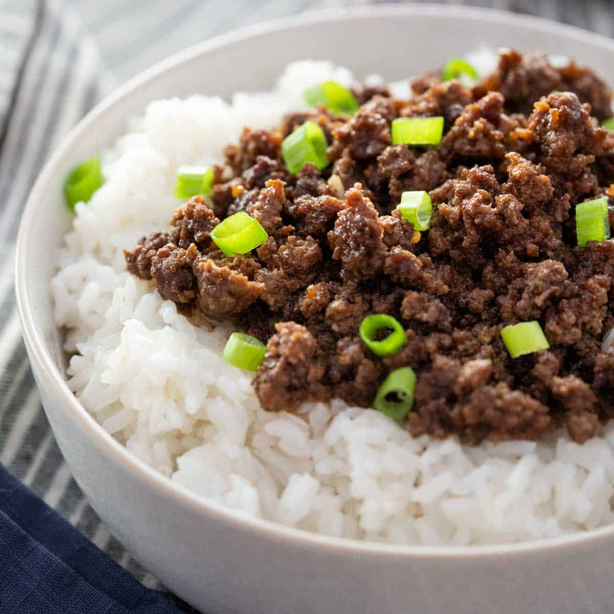

Beef Bowl

A bowl of steamed white rice topped with seasoned ground beef garnished with sliced green onion
Ingredients
- 1 lb. ground beef
- 1 cup steamed white rice
- 1 tsp ginger
- 2 tsp sesame oil
- 1 tbsp garlic
- 1/3 cup soy sauce
- 1/2 cup brown sugar
- 2 green onion
- Optional - wonton strips
Directions
- Prepare 1 cup white rice in rice cooker.
- Thin slice green onion then separate green and white parts.
- Mince ginger and garlic separately.
- Mix ginger, sesame oil, soy sauce, and brown sugar in a bowl. Put aside for later.
- Brown meat with garlic and white part of green onion in large skillet on medium-high heat. Drain fat.
- Stir in sauce mix with ground beef and bring to a boil, reduce heat and let simmer for 3-4 minutes.
- Serve over white rice, garnish with green onion and wonton strips.
- Enjoy!